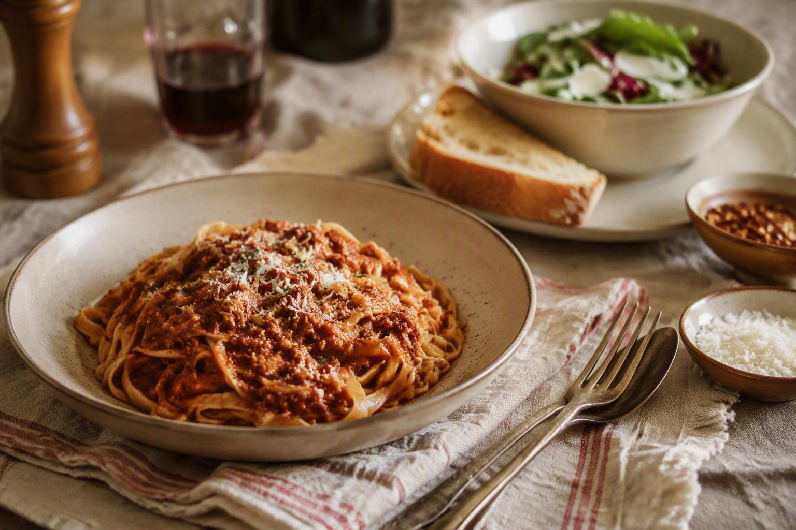

Home
Beef Bolognese Pasta

Description
This is one of those dishes that instantly transports me back to my childhood - the ultimate comfort food. It's rich and savory, but so simple to make.
I prefer to make this recipe with fettuccine or penne pasta, but you can use any pasta noodle you wish.
Ingredients
- 2 Tbs ghee, tallow, or olive oil
- 3-4 garlic cloves, finely minced
- 1 medium onion, finely diced
- 1 medium carrot, coursely grated
- 1 lb 80/20 ground beef
- 1 lb ground pork
- beef spices, to taste (my favorite is Tailgate Spices Intentional Grounded Beef Seasoning)
- 1 24 oz jar of marinara sauce (or, my personal favorite alternative is Carbone Spicy Vodka Sauce)
- 1 tsp kosher salt
- 1/2 tsp freshly cracked black pepper
- 1/2 cup heavy cream
- 1 lb cooked pasta of your choice (my favorite is Banza Chickpea Pasta which is gluten free, high protien, low carb, and super delicious)
- freshly grated parmesan cheese, for serving
Steps
- Heat the ghee, tallow, or olive oil in a large saucepan over medium heat. My recommendation is to use ghee or tallow because they both handle the heat of cooking meat better than olive oil, and they both can create a lovely carmelizing effect on the onions, garlic, and meat. But, use olive oil if that is what you have on hand.
- Once heated, add the garlic, onion, and carrots, and cook, stirring, until just tender, about 4 minutes.
- Add the ground beef, ground, pork, and beef spices and cook, breaking up the meat as it cooks, until the meat is nicely browned, about 8 minutes. If you are unsure about how much beef spices to use, I recommend starting at around 1/2 Tbs. Once the meat is cooked through, you can sample it and decide if you want to season it more before moving on to the next step. Remember that the flavor of the meat will be tempered by the sauce and cream, so you want to aim for a stronger flavor at this point.
- Stir in the sauce, salt, and pepper and lower the heat to simmer, for about 30 minutes or until the sauce thickens.
- Stir in the heavy cream and remove from heat.
- Serve the bolognese over the cooked pasta and sprinkle with parmesan cheese. If you are going to have leftovers, I recommend refrigerating the leftover sauce separately from the leftover noodles.